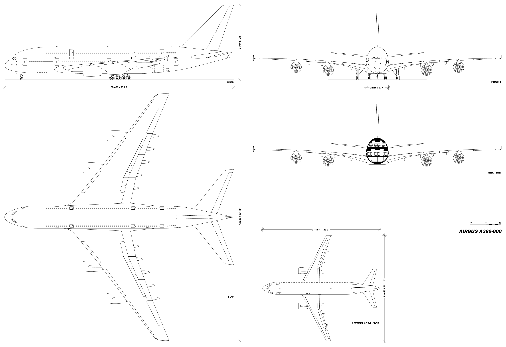
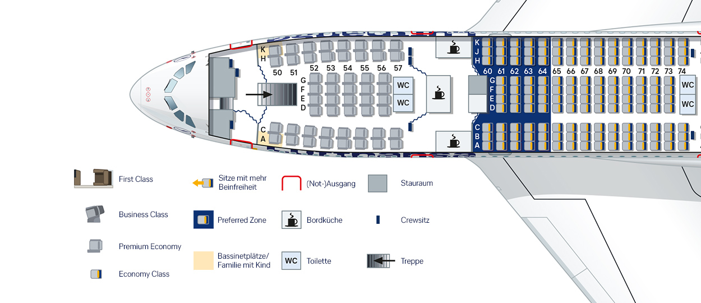
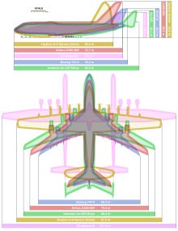

Dimensions
L'Airbus A380 est réparti sur 2 étages, offrant une capacité maximale de 853 passagers en configuration tout-économique. Son pont supérieur est principalement dédié aux classes affaires et première, tandis que le pont inférieur accueille la classe économique. Cet avion est reconnu pour son confort et ses installations modernes, telles que des bars, des espaces de détente et des cabines luxueuses dans certaines compagnies aériennes.

| Nom | Valeur |
|---|---|
| Longueur | 80 m |
| Hauteur | 24 m |
| Envergure | 80 m |
| Aire alaire | 845 m2 |
Masse et capacité d'emport
L'Airbus A380, l'un des plus grands avions commerciaux au monde, affiche une masse maximale au décollage (MTOW) impressionnante de 575 tonnes. Il est capable d'emporter jusqu'à 253 tonnes de carburant, ce qui lui permet de parcourir jusqu'à 15 200 kilomètres sans escale. En termes de capacité d'emport, en plus de ses passagers, il peut transporter jusqu'à 40 tonnes de fret dans sa soute, ce qui en fait un appareil polyvalent pour les vols long-courriers combinant passagers et marchandises.

| Nom | Valeur |
|---|---|
| Max. à vide | 370 t |
| Max. au décollage | 575 t |
| Passagers |
|
Comparaison des plus grands avions du monde

L'image met en évidence une comparaison des dimensions des plus grands avions jamais construits, illustrant leur envergure, longueur et hauteur. Parmi eux, l'Airbus A380-800, avec une longueur de 72,7 mètres et une envergure de 79,8 mètres, est l'un des plus emblématiques pour le transport de passagers. Il est légèrement surpassé en taille par des géants comme le Boeing 747-8, l'Antonov An-225 Mriya, et surtout le Stratolaunch, dont l'envergure atteint un record impressionnant de 117 mètres. En revanche, le Hughes H-4 Spruce Goose, bien que conçu principalement en bois, se distingue par son envergure massive de 97,5 mètres. Ces dimensions démontrent l'évolution spectaculaire de l'aviation, avec des conceptions variées adaptées à des objectifs spécifiques, qu'il s'agisse de transport de passagers, de fret ou de missions spécialisées comme celles du Stratolaunch.